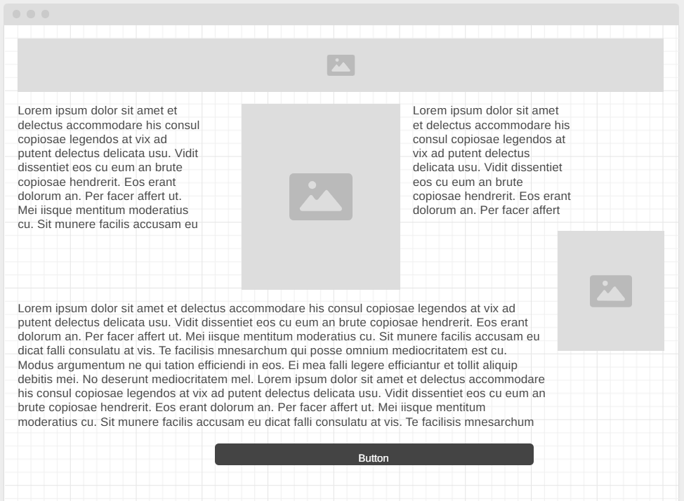
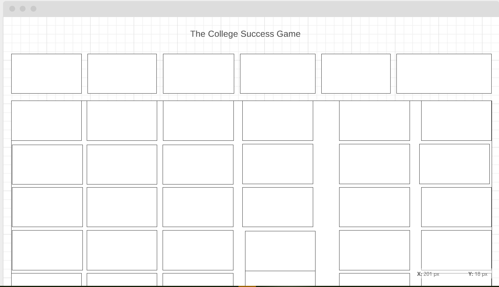

This site is meant to be a funny adaptation for a college success type site. It is told by the character Uncle Poopy for those that are attending college for the first time or long time attenders. It is filled with resources for many people who find themselves away from what they call home for the first years of their adult life. Everything Uncle Poopy wished he had knew before he did it. The way the site works is by selecting a category from the drop down menu and creating a "jeopordy game" by clicking the link and clicking around looking for information. All information is stored in an easy to get to format on the index page as well. Color scheme will be blue on blue. Font will be something like Arial/sans Serif
Content teaser: Writing a Paper making a picture friends/activities shopping/cooking dating/ways to stay safe studying tips scam advice registering for classes phrases to understand in your area religion information website/internet information
